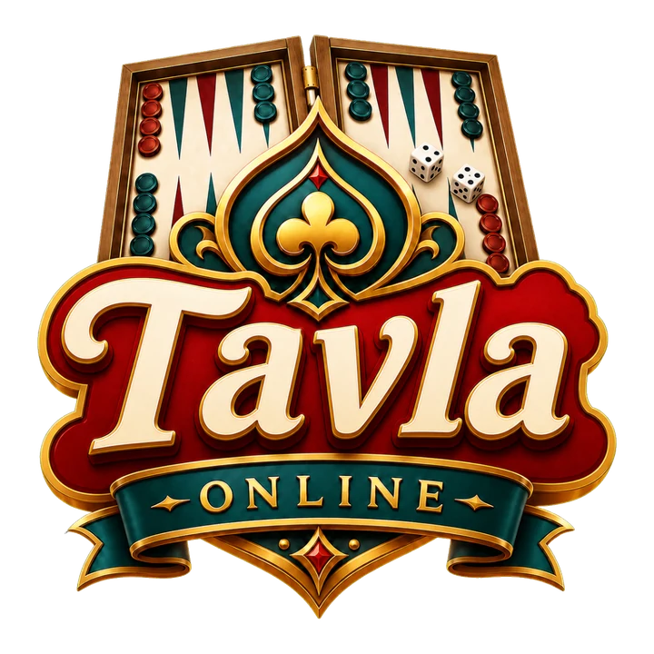
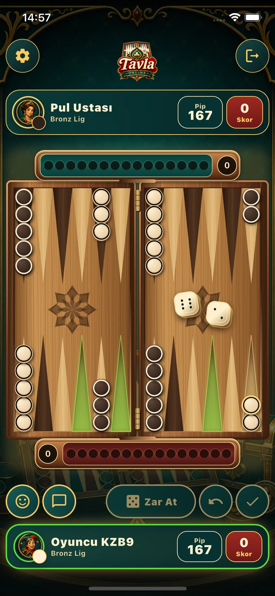
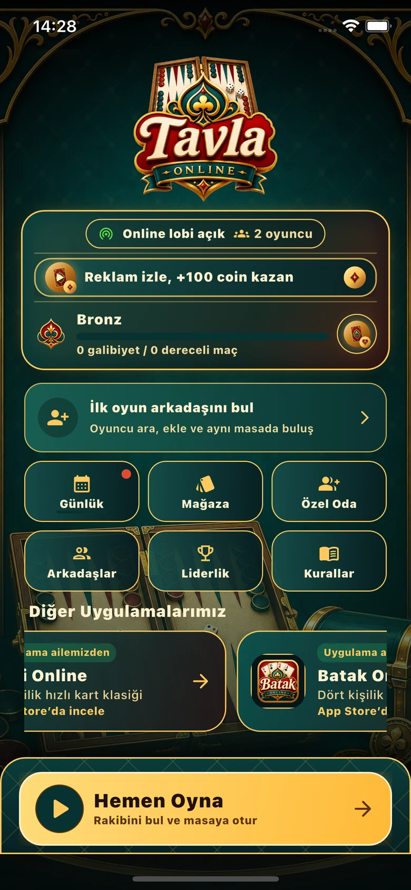
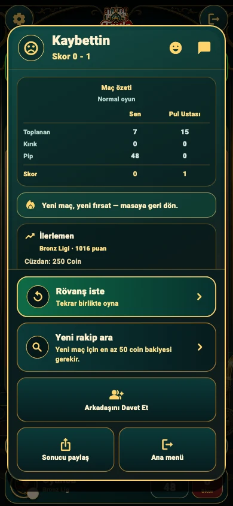

Hızlı eşleşme
Masaya katıl, rakibinle buluş ve oyuna başla. Başlangıçtaki beş saniye içinde masadan ayrılabilirsin.

Klasik tavla · Çevrim içi rekabet
Zarını at, hamleni düşün, masanın keyfini çıkar. Telefonunu çevirmeden tavla oyna; arkadaşlarınla aynı masada buluş.
iOS için hazırlanıyor · App Store bağlantısı yakında
Oyunun içinde
Ahşap tavla masası, akıcı pul hareketleri ve tek elle rahatça takip edilebilen dikey oyun deneyimi.
Masaya katıl, rakibinle buluş ve oyuna başla. Başlangıçtaki beş saniye içinde masadan ayrılabilirsin.
Zarlarını kullan, pullarını ilerlet ve topla. Normal oyun, mars ve katmerli mars sonuçlarını aynı masada yaşa.
Maç sonuçlarını takip et, liginde ilerle ve haftalık sıralamada yerini gör.
Özel masa davetiyle buluş; emoji ve hazır mesajlarla oyuna renk kat.
Sonucunu ve istatistiklerini gör; rövanş iste veya yeni bir rakiple devam et.
Belirgin pullar, yeşil hedefler ve adım adım hareketlerle oyunu rahatça takip et.
Uygulamadan bir bakış
Oyun masası, ana menü ve maç sonu; Tavla’nın güncel arayüzünden örnekler.

Belirgin pullar, animasyonlu zarlar ve hareketler.

Hızlı oyun, özel masa, arkadaşlar ve ilerleme.

Sonucun, istatistiklerin ve rövanş seçeneklerin.
App Store indirme bağlantısı, oyun yayımlandığında bu sayfaya eklenecek.
Destek bilgileriVerilerini, reklam tercihlerini ve kalıcı hesap silme yollarını öğren.
Gizlilik politikasıCoinler, bağlantı kesintisi, satın alma ve oyun koşulları.
Kullanım koşullarıGeliştirici
Tavla Online, Ümit Çağdaş’ın Pişti ve Batak ile aynı oyun ailesinde geliştirdiği mobil tavla deneyimidir.